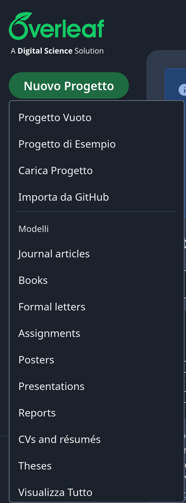
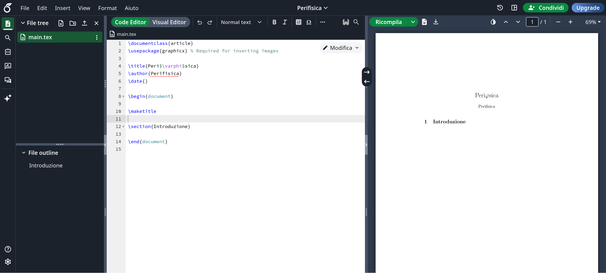
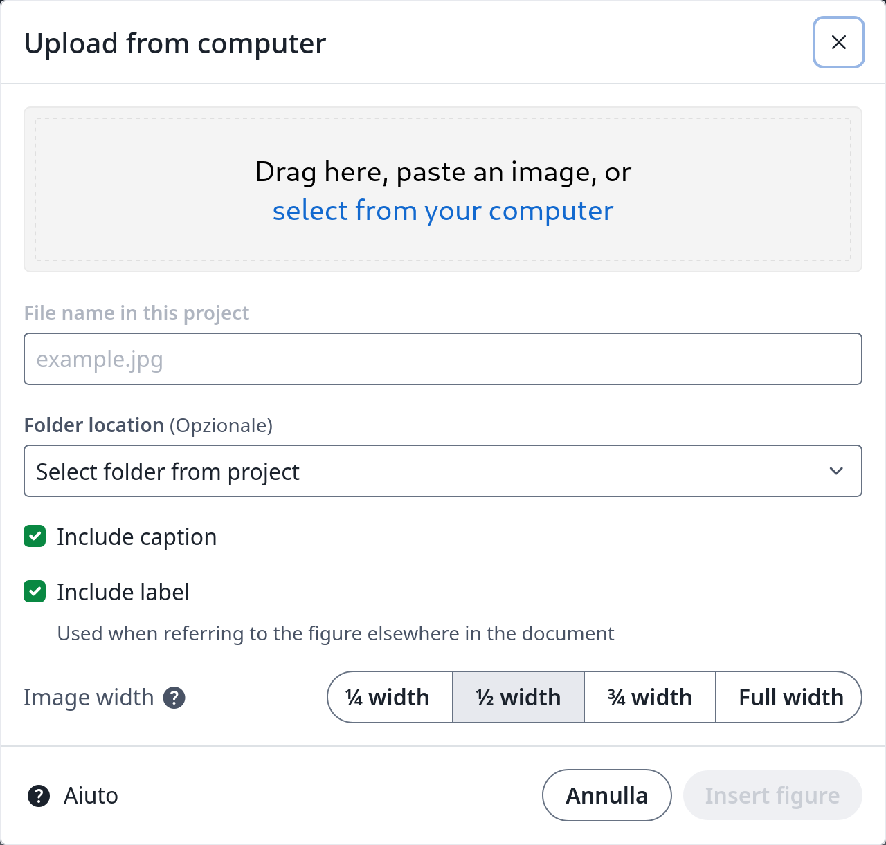
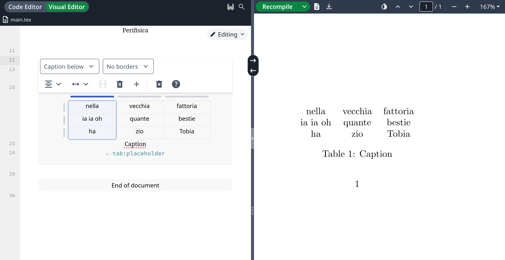
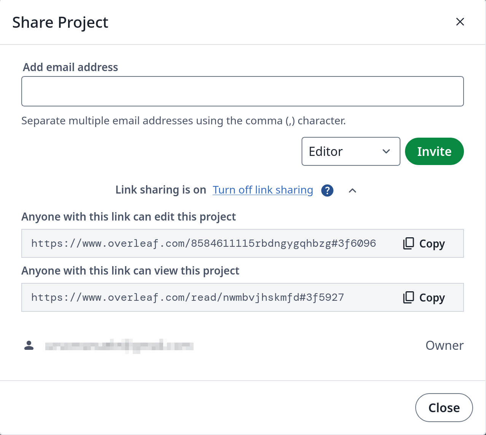

In questa lezione verrà mostrato il modo più basilare per interfacciarsi al \(\LaTeX\), con la possibilità di non scrivere nemmeno una riga di codice, grazie alle funzioni precostituite di Overleaf .
Per iniziare su Overleaf il primo passo è la creazione di un account. Per registrarti, vai alla homepage di Overleaf e clicca sul pulsante "Registrati" in alto a destra. Per registrarti ti serviranno un indirizzo e-mail ed una password ; in alternativa è possibile registrarsi tramite Google, ORCID ? oppure SSO ? . riceverai una mail che ti chiederà di verificare il tuo indirizzo e-mail e, una volta fatto, sarai pronto per iniziare!
Per creare un nuovo progetto su Overleaf, bisogna accedere al proprio profilo e si troverà "Nuovo progetto" in alto a sinistra nella pagina.

Verranno mostrati una serie di modelli disponibili per iniziare, suddivisi in categorie come riviste accademiche, presentazioni e tesi. Potete selezionare uno dei modelli visibili nella categoria di vostra scelta, così come altri modelli disponibili, sebbene si possa anche sfogliare i modelli recenti e popolari utilizzati da altri utenti di Overleaf. Infine c'è la possibilità di partire da un foglio bianco per personalizzare al massimo la propria opera. In questa guida si partirà da qui.
Una volta aperto un progetto, lo schermo mostrerà tre colonne, da sinistra a destra:

La prima colonna può essere chiusa e riaperta cliccando sul pulsante in alto a sinistra oppure sulla freccetta al centro, al fine di avere una visuale più ampia della parte modificabile. Anche la colonna di destra può essere rimossa tramite l'apposita freccetta. Infine tutte le colonne possono essere ridimensionate interagendo con il bordo separatore.
Per impostazione predefinita l'anteprima si aggiorna automaticamente man mano che vengono apportate modifiche, ma può essere impostata su un'opzione manuale, perciò ogni aggiornamento viene applicato solo dopo aver cliccato il tasto Ricompila
Quando si modifica un progetto, è possibile scegliere tra due opzioni: "Code Editor" e "Visual Editor". La modalità di scrittura è uguale ad ogni altro editor \(\LaTeX\), ma la modalità visuale offre degli strumenti grafici in più, permettendo all'utente di interagire senza modificare il codice manualmente. Ci si concentrerà principalmente sulla modifica in Visual Editor, perché è una peculiarità di Overleaf; nelle lezioni successive il focus sarà il codice, per una conoscenza completa del linguaggio di programmazione.
Overleaf offre la possibilità di automatizzare l'inserimento di elementi di base, come la creazione di elenchi e l'applicazione di grassetto o corsivo al testo, figure, tabelle, presenti nel campo Inserisci e in Formato .
In alto a destra è presente un orologio con una freccia in senso antiorario come contorno: è la
cronologia
del file. Con la versione online gratuita di Overleaf, gli utenti possono visualizzare le revisioni delle
ultime 24 ore del progetto. È possibile accedere alla cronologia di un progetto anche
nella barra degli strumenti tramite
File > Mostra cronologia
.
La funzione successiva che vedremo in questa guida è Modifica , la seconda da sinistra, che comprende le classiche funzioni di Annulla/Ripeti e Trova e Seleziona tutto . La funzione Trova consente di cercare l'esistenza e le posizioni di una o più parole nel documento; si aprirà anche Sostituisci , che consente di scegliere una o più parole e sostituire una o tutte le occorrenze delle stesse con qualcosa di nuovo.
Verranno trattate in capitoli dedicati le opzioni presenti in Inserisci, eccetto l'ultimo bottone, riservato ai Commenti : questa opzione permette ai collaboratori di lasciarsi feedback a vicenda e di rispondere ai commenti degli altri, senza il rischio che essi compaiano nel testo finale.
Sono presenti due frecce sul bordo tra colonna centrale e quella destra: quella verso destra permette di selezionare qualcosa nell'editor e vedere a cosa corrisponde nel documento pdf; quella verso sinistra ha il compito opposto: dopo un attimo, la schermata di modifica salterà alla sezione di codice corrispondente.
Per inserire una figura è presente l'apposito comando in Inserisci , nella barra degli strumenti. È possibile scegliere l'immagine tra diverse fonti:

Infine per inserire la figura proprio sotto al testo che si sta scrivendo si deve andare in
Code
Editor
e
aggiungere
[!h]
?
accanto a
\begin{figure}
Questo è necessario perché \(\LaTeX\) cerca di ottimizzare sempre automaticamente lo spazio disponibile
e alcune volte questo comportamento non rispetta la volontà dell'autore. Con questo semplice
comando si dice al compilatore:
Voglio qui l'immagine!
Anche per inserire una tabella è presente un comando in Inserisci . In questo caso viene scritta in automatico la sintassi per una tabella di tre righe e 3 colonne senza divisori nè interni nè esterni. Nella visuale Visual Editor è possibile interagire con la tabella, modificando i bordi, aggiungendo o rimuovendo righe e colonne, centrando il testo e modificando la larghezza delle colonne.

Per riempire la tabella basta interagire con essa come su un foglio di calcolo, cliccando sulla cella e
scrivendone il contenuto.
Anche in questo caso, per indicare la posizione della tabella bisogna aggiungere
[!h]
dopo
\begin{table}
In altro a destra è possibile trovare il tasto Condividi nella barra degli strumenti. Si aprirà la seguente finestra:

I progetti possono essere condivisi tramite indirizzo mail con un numero illimitato di collaboratori nella versione premium e con al massimo un collaboratore in quella gratuita. La collaborazione tramite mail è di 3 tipi:
Questa restrizione non è presente attivando il link sharing , che di norma è disattivato. È così possibile copiare il link e condividerlo con i propri collaboratori. Si può vedere che ci sono due tipi di link:
In questa lezione non è stata affrontata la scrittura di codice \(\LaTeX\): questo perchè le funzioni di Overleaf vengono incontro all'utente meno esperto permettendogli di non scrivere codice. Nella prossima lezione vedremo come installare \(\LaTeX\) in locale e da qui in poi come programmare in questo linguaggio. Tutte le informazioni contenute nelle prossime lezioni rimangono valide in Overleaf usando la modalità Code Editor .